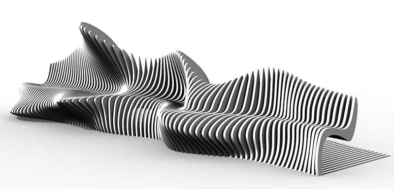

This project explores how digital maker culture is changing the nature
of authorship and production in art. This work reflects on cultural,
technological, and ethical changes focusing on collaborative
authorship on web platforms. We will invite audiences to generate
collaborative online poems (of less than 500 characters) and then
capture a series of waveforms from their poems. Our web platform will
create 3D models of the waveforms for digital fabrication. Our
audiences can download the 3D model and print their poem with a
personal 3D printer. The physical poems will be shared, rendered, and
archived on the website. The physical poems can be scanned to play the
sound of the waveform, read the original text, and regenerate the code
on the website. Audiences can immersively experience the entire
process and transformation of generative poetics from the birth of the
poem to its final fabrication and even beyond through the reversal of
the process, shifting the form and medium.

Budget:
We will use $500 to set up a permanent, dedicated server for the
website. We will use another $500 to 3D print an initial library of
poems and demonstrate the process. The artists’ fee will be $500.